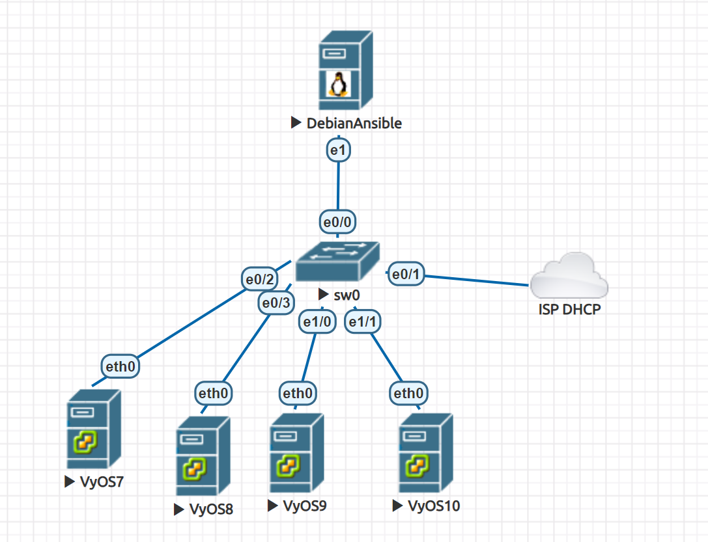

Ansible example
Setting up Ansible on a server running the Debian operating system.
In this example, we will set up a simple use of Ansible to configure multiple VyoS routers. We have four pre-configured routers with this configuration:
Using the general schema for example:
{kind=link}
We have four pre-configured routers with this configuration:
set interfaces ethernet eth0 address dhcp
set service ssh
commit
save
vyos7 - 192.0.2.105
vyos8 - 192.0.2.106
vyos9 - 192.0.2.107
vyos10 - 192.0.2.108
Install Ansible:
# apt-get install ansible
Do you want to continue? [Y/n] y
Install Paramiko:
#apt-get install -y python3-paramiko
Check the version:
# ansible --version
ansible 2.10.8
config file = None
configured module search path = ['/root/.ansible/plugins/modules', '/usr/share/ansible/plugins/modules']
ansible python module location = /usr/lib/python3/dist-packages/ansible
executable location = /usr/bin/ansible
python version = 3.9.2 (default, Feb 28 2021, 17:03:44) [GCC 10.2.1 20210110]
Basic configuration of ansible.cfg:
# nano /root/ansible.cfg
[defaults]
host_key_checking = no
Add all the VyOS hosts:
# nano /root/hosts
[vyos_hosts]
vyos7 ansible_ssh_host=192.0.2.105
vyos8 ansible_ssh_host=192.0.2.106
vyos9 ansible_ssh_host=192.0.2.107
vyos10 ansible_ssh_host=192.0.2.108
Add general variables:
# mkdir /root/group_vars/
# nano /root/group_vars/vyos_hosts
ansible_python_interpreter: /usr/bin/python3
ansible_network_os: vyos
ansible_connection: network_cli
ansible_user: vyos
ansible_ssh_pass: vyos
Add a simple playbook with the tasks for each router:
# nano /root/main.yml
---
- hosts: vyos_hosts
gather_facts: 'no'
tasks:
- name: Configure general settings for the vyos hosts group
vyos_config:
lines:
- set system name-server 8.8.8.8
- set interfaces ethernet eth0 description '#WAN#'
- set interfaces ethernet eth1 description '#LAN#'
- set interfaces ethernet eth2 disable
- set interfaces ethernet eth3 disable
- set system host-name {{ inventory_hostname }}
save:
true
Start the playbook:
ansible-playbook -i hosts main.yml
PLAY [vyos_hosts] **************************************************************
TASK [Configure general settings for the vyos hosts group] *********************
ok: [vyos9]
ok: [vyos10]
ok: [vyos7]
ok: [vyos8]
PLAY RECAP *********************************************************************
vyos10 : ok=2 changed=0 unreachable=0 failed=0 skipped=0 rescued=0 ignored=0
vyos7 : ok=2 changed=0 unreachable=0 failed=0 skipped=0 rescued=0 ignored=0
vyos8 : ok=2 changed=0 unreachable=0 failed=0 skipped=0 rescued=0 ignored=0
vyos9 : ok=2 changed=0 unreachable=0 failed=0 skipped=0 rescued=0 ignored=0
Check the result on the vyos10 router:
vyos@vyos10:~$ show interfaces
Codes: S - State, L - Link, u - Up, D - Down, A - Admin Down
Interface IP Address S/L Description
--------- ---------- --- -----------
eth0 192.0.2.108/24 u/u WAN
eth1 - u/u LAN
eth2 - A/D
eth3 - A/D
lo 127.0.0.1/8 u/u
::1/128
vyos@vyos10:~$ sh configuration commands | grep 8.8.8.8
set system name-server '8.8.8.8'
The simple way without configuration of the hostname (one task for all routers):
# nano /root/hosts_v2
[vyos_hosts_group]
vyos7 ansible_ssh_host=192.0.2.105
vyos8 ansible_ssh_host=192.0.2.106
vyos9 ansible_ssh_host=192.0.2.107
vyos10 ansible_ssh_host=192.0.2.108
[vyos_hosts_group:vars]
ansible_python_interpreter=/usr/bin/python3
ansible_user=vyos
ansible_ssh_pass=vyos
ansible_network_os=vyos
ansible_connection=network_cli
# nano /root/main_v2.yml
---
- hosts: vyos_hosts_group
connection: network_cli
gather_facts: 'no'
tasks:
- name: Configure remote vyos_hosts_group
vyos_config:
lines:
- set system name-server 8.8.8.8
- set interfaces ethernet eth0 description WAN
- set interfaces ethernet eth1 description LAN
- set interfaces ethernet eth2 disable
- set interfaces ethernet eth3 disable
save:
true
# ansible-playbook -i hosts_v2 main_v2.yml
PLAY [vyos_hosts_group] ********************************************************
TASK [Configure remote vyos_hosts_group] ***************************************
ok: [vyos8]
ok: [vyos7]
ok: [vyos9]
ok: [vyos10]
PLAY RECAP *********************************************************************
vyos10 : ok=1 changed=0 unreachable=0 failed=0 skipped=0 rescued=0 ignored=0
vyos7 : ok=1 changed=0 unreachable=0 failed=0 skipped=0 rescued=0 ignored=0
vyos8 : ok=1 changed=0 unreachable=0 failed=0 skipped=0 rescued=0 ignored=0
vyos9 : ok=1 changed=0 unreachable=0 failed=0 skipped=0 rescued=0 ignored=0
In the next chapter of the example, we’ll use Ansible with jinja2 templates and variables.